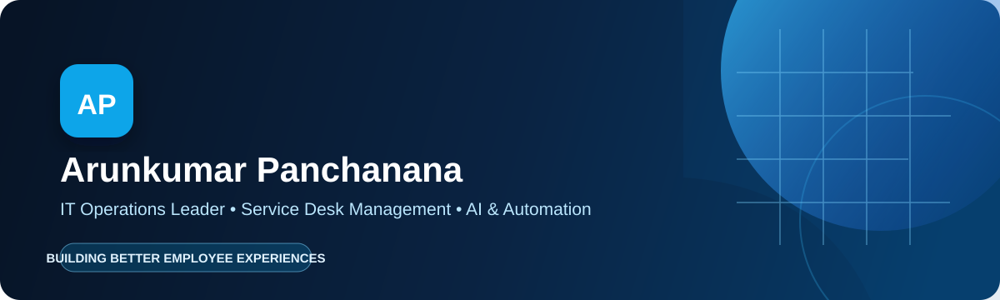

👋 About meI lead global IT support organizations that make the employee technology experience feel simple, reliable, and human. My work sits at the intersection of service management, modern workplace technology, and AI-powered operations. |
🎯 My operating principleGreat support is not just resolving tickets. It is removing friction before people feel it. Based in: Bengaluru, India |
| ⚡ Operational excellence ITSM, incident management, performance reporting, and service improvement |
🤖 AI with purpose Automation, virtual agents, knowledge assistants, and self-service |
🌐 People at scale Global support leadership, mentoring, and stakeholder alignment |
|
📊 Make operations visible Built APAC performance dashboards in ServiceNow and Amazon Connect, turning support activity into timely operational insight. |
✨ Improve the support journey Partnered on AI-enabled service improvements across SLA adherence, CSAT, first-contact resolution, and handling time. |
|
🧭 Lead through complexity Directed enterprise site operations, support teams, and asset lifecycle practices across major technology campuses. |
📚 Prevent repeat issues Strengthened proactive support, root-cause analysis, knowledge practices, and self-service to reduce avoidable demand. |
Let's build support experiences people can trust.
LinkedIn • Email • GitHub